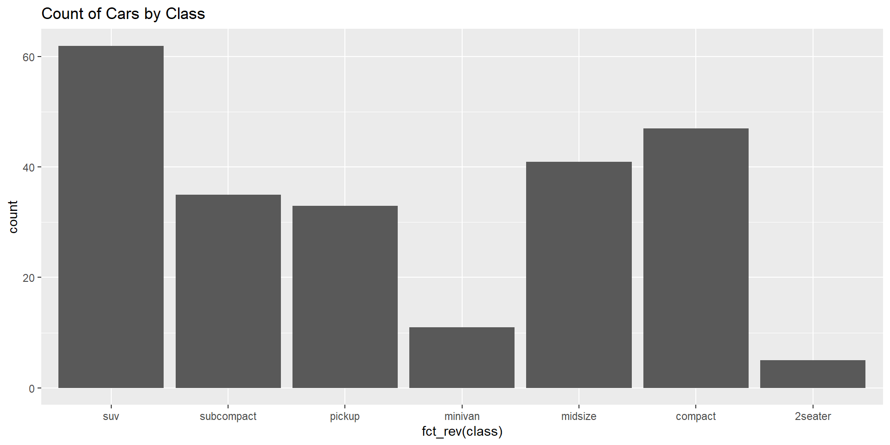

A package in the Tidyverse for tidying data
Helps convert data between wide and long formats
Simplifies reshaping and cleaning datasets
Key Functions in tidyr
Converting from Wide data (multiple columns for the same variable) to Long data (one column for each variable)
# A tibble: 6 × 3
id year value
<int> <chr> <dbl>
1 1 2021 100
2 1 2022 110
3 2 2021 150
4 2 2022 160
5 3 2021 200
6 3 2022 210Converting from Long to Wide Format
# A tibble: 3 × 3
id `2021` `2022`
<dbl> <dbl> <dbl>
1 1 100 110
2 2 150 160
3 3 200 210Splits a single column into multiple columns
# A tibble: 3 × 2
first_name last_name
<chr> <chr>
1 John Doe
2 Jane Smith
3 Alice Johnson Combines multiple columns into one
# A tibble: 3 × 1
full_name
<chr>
1 John Doe
2 Jane Smith
3 Alice JohnsonRemoves rows with missing values
# A tibble: 1 × 2
x y
<dbl> <dbl>
1 1 4Fills missing values using the previous or next available value
# A tibble: 5 × 1
x
<dbl>
1 1
2 1
3 3
4 3
5 5tidyr: Specializes in reshaping and tidying data (e.g., pivot_longer(), pivot_wider(), separate()).
dplyr: Specializes in data manipulation, such as subsetting, grouping, and summarizing (e.g., filter(), mutate(), summarize()).
part of the tidyverse, focused on reading and writing rectangular data (e.g., CSV, TSV).
Faster and more consistent than base R functions
Makes data handling easy and efficient.
Key Functions:
# A tibble: 5 × 1
x
<dbl>
1 1
2 NA
3 3
4 NA
5 5# A tibble: 5 × 1
x
<dbl>
1 1
2 NA
3 3
4 NA
5 5enhances R’s functional programming capabilities by providing a consistent, simple way to apply functions to lists, vectors, and other data structures.
Key function:-
Applies a function to each element of a list and returns a list.
[[1]]
[1] 1
[[2]]
[1] 4
[[3]]
[1] 9
[[4]]
[1] 16
[[5]]
[1] 25To apply a function and return a vector (not a list), map_dbl() is used.
[1] 1 4 9 16 25Applies a function to two inputs simultaneously.
useful when you need to operate on two lists.
[[1]]
[1] 11
[[2]]
[1] 22
[[3]]
[1] 33Used to get a character vector instead of a numeric one.
[1] "1" "2" "3" "4"purrr is specifically focused on working with lists and vectors using functional programming techniques.
tidyr is focused on reshaping data frames (long to wide format and vice versa), separating and combining columns.
A modern version of a data frame.
More robust and user-friendly than traditional data frames.
Improved handling of large data sets
# A tibble: 3 × 3
Name Age Location
<chr> <dbl> <chr>
1 John 25 New York
2 Alice 30 London
3 Bob 22 Paris # A tibble: 3 × 4
Name Age Is_Active Height
<chr> <dbl> <lgl> <dbl>
1 John 25 TRUE 5.9
2 Alice 30 FALSE 5.6
3 Bob 22 TRUE 6.1Data Frame
Tibble
Only shows the first few rows, making it easier to handle large datasets.
Does not convert character columns into factors by default, avoiding a common issue with data frames.
Provides simple functions for common text operations.
Focuses on consistency and ease of use.
Key Functions:-
[1] TRUE[1] "I love Python programming."[1] "The dog is on the mat. The dog is cute."[1] "Hello"[1] "hello, world!"[[1]]
[1] "apple" "banana" "cherry"[1] 5It makes working with date-times easier
Provides functions to manipulate, parse, and format date-time data.
Simplifies operations like extracting parts of date-time, arithmetic operations, and handling time zones.
[1] "2025-03-03"[1] "2025-03-03 12:30:45 UTC"[1] 2025[1] 3[1] 3[1] 12[1] 30[1] 45[1] 2025-03-01 UTC--2025-03-05 23:59:59 UTCMakes working with categorical variables easier.
Provides tools to manipulate factors and handle tasks like reordering, renaming, and combining levels.
Key functions :
[1] Low High Medium Low High
Levels: High Low Medium[1] Low High Medium Low High
Levels: Medium High Low[1] Very Low Very High Medium Very Low Very High
Levels: Very High Very Low Medium[1] Low/Medium High Low/Medium Low/Medium High
Levels: High Low/Medium[1] Low High Medium Low High
Levels: High Low Medium
forcats works with factors used for modifying factor levels, whereas dplyr also provides some functions that manipulate factors (e.g., mutate() and factor()).
forcats: Designed specifically for working with factors and making factor level manipulations easier.
dplyr: While dplyr can work with factors, forcats is more specialized for factor-specific operations.